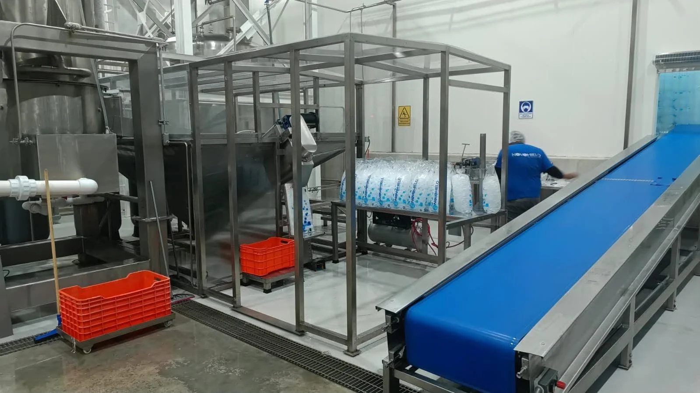

Tanques y recipientes
Fabricación de tanques de almacenamiento en aceros inoxidables T316 y T316L, según el perfil corporativo.

Fabricación, intervención y montaje de piezas, tolvas, cabinas y tuberías especializadas.
Fabricación, intervención y montaje de piezas, tolvas, cabinas y tuberías especializadas.
Las fotografías siguientes corresponden al conjunto «Acero inoxidable y grado alimenticio» que ISC proporcionó. No se presupone que todas sean del mismo proyecto o cliente.
Solicitar cotizaciónAlcances y actividades sustentados por el perfil corporativo actualizado de ISC.
Fabricación de tanques de almacenamiento en aceros inoxidables T316 y T316L, según el perfil corporativo.
Instalación de tubería inoxidable en instalaciones alimenticias, con los grados indicados en el perfil (T304 y T306).
Estructuras, tolvas, protecciones y piezas especiales, con registro de trabajos en Novohielo.
Selecciona una imagen para abrirla a tamaño completo.
Fotografías proporcionadas por ISC, agrupadas por especialidad.